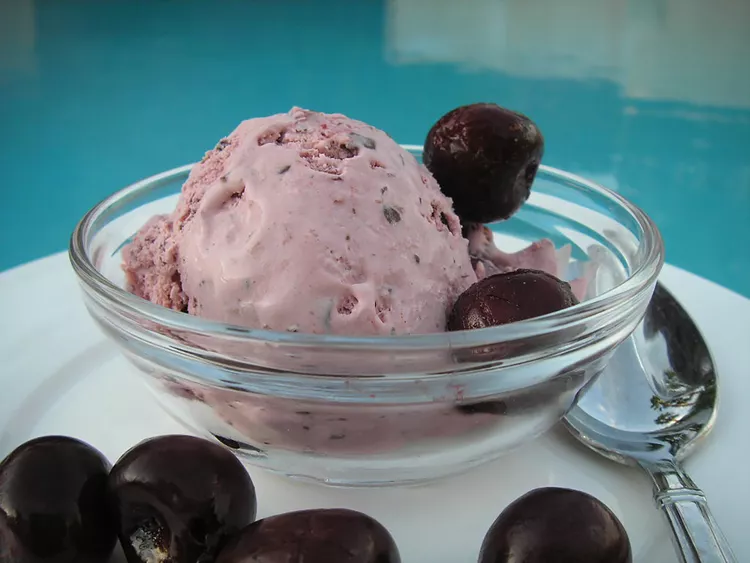

Cherry Ice Cream

Delicious black cherry ice cream recipe! It's a fabulous, dark shade of
magenta and has a tart flavor that kids (and adults) will love. I have
been experimenting with tart cherry juice, and I love this recipe.
Ingredients
- 1 cup heavy cream
- 1 cup vanilla low-fat yogurt
- ½ cup fat free milk
- ¼ cup cherry juice concentrate
- 1 cup frozen dark sweet cherries
- ½ cup white sugar
- 2 teaspoons almond extract
- 1 pinch salt
Steps
- Place cream, yogurt, milk, and cherry concentrate into a blender. Add cherries,
sugar, almond extract, and salt. Purée until only small bits of cherries remain.
- Pour mixture into a 1 1/2-quart ice cream maker and freeze according to
manufacturer's instructions, about 20 minutes. Transfer to an airtight container
and freeze until firm, about 4 hours.